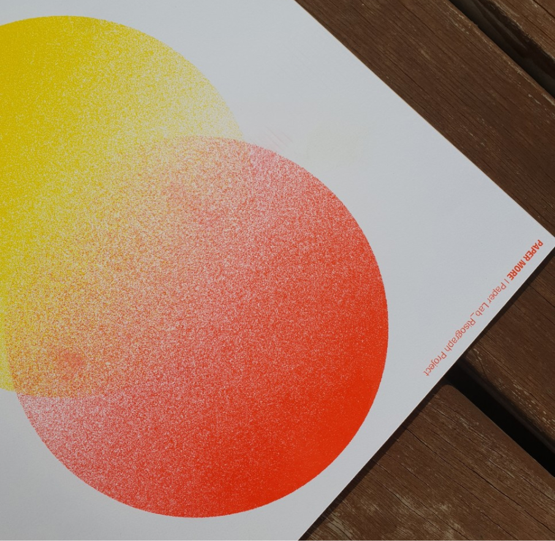

알고있으면 인쇄비를 절약할 수 있는
인쇄종류에 대해 알아볼까요?

복잡하고 어려운 단어에 머리아파 본적있다면?
인쇄소가서 진땀 빼본적있다면?
초보 디자이너를 위한 인쇄 가이드
인쇄소 가기 전에 보고 가세요!
PRINT GUIDE
복잡하고 어려운 단어에 머리아파 본적있다면?
인쇄소가서 진땀 빼본적있다면?
초보 디자이너를 위한 인쇄 가이드
인쇄소 가기 전에 보고 가세요!

알고있으면 인쇄비를 절약할 수 있는
인쇄종류에 대해 알아볼까요?
리소 인쇄(Risograph)는 하나의 문서를 여러 장 찍어 낼 수 있게 개발된 공판 인쇄 기법 입니다. 공판이 되는 막을 마스터(원지)라 하며, 마스터에 미세한 구멍을 뚫어 이미지를 표현합니다. 그리고 구멍 사이로 잉크를 내보내어 용지에 이미지를 인쇄합니다.
| 특징 |
1. 한 번에 한 가지 또는 두 가지 색상의 인쇄가 가능해요.
인쇄 과정을 반복(오버프린트)하면 색상 수에 제한 없이 결과물을 만들어 낼 수 있어요.
2. 원료의 특성상 건조가 느려요.
3. 코팅이 된 종이에는 인쇄가 불가능해요.
4. 인쇄 정합에 오차가 있어 완성된 장마다 그 결과에 차이가 있을 수 있어요.
5. 별색 잉크 자체의 밝고 선명한 색감과 독특한 질감을 표현 가능해요.
6. 형광 핑크, 형광 옐로우, 반짝이는 금색, 백색 등의 별색을 소량 인쇄 가능해요.
| 표현 |
하나의 색상을 사용한 인쇄부터 여러가지 색상을 혼합한 인쇄까지 할 수 있어요.
사용하는 색상의 갯수에 따라 만들어야하는 파일의 수도 달라집니다.
| 오버프린트 |
| 녹아웃 |
이미지가 겹쳐진 부분을 그대로 겹쳐 인쇄하는 방법.
이미지가 겹쳐진 부분에서 어느 한쪽을 비우는 방법.
인쇄 오차에 의해 종이의 흰 부분이 보일 수도 있어요.
| 파일 |
색상별로 분리한 흑백 파일을 준비해야해요.
파일에 포함된 레스터 이미지는 그레이스케일 모드로 변환해야 하며,
해상도는 300-600dpi를 권장합니다.
| 분판 |
컬러를 흑백으로 변환할 때, 명도에 따른 회색도 값을 주의해야해요.
예를 들어 보라색 레이어의 흑백 파일을 만들 때는
가장 진한 보라 부분이 가장 진한 블랙으로 되어 있어야 해요!
원하는디자인
보라 분판
박
인쇄물에 빛나는 글자나 로고를 표현하기 위해 사용되는 후가공
형압
글자, 로고 또는 특정 디자인에 압력을 가하여 돌출시키거나 들어가게 하는 후가공
코팅(라미네이팅)
얇은 비닐 필름을 인쇄면에 붙이는 후가공
무광 / 유광 / uv / 홀로그램
접지
사각 인쇄물을 수직이나 수평으로
접어주는 가공
오시
글자, 로고 또는 특정 디자인에 압력을 가하여 돌출시키거나 들어가게 하는 후가공
타공
종이에 원형의 구멍을 뚫는 후가공
고리나 끈을 꿰어 걸거나 묶을 수 있음
미싱
점선 커팅을 하여 해당 부분을 뜯어 분리하기 쉽게 만드는 가공
귀도리(라운딩)
재단 후 각진 인쇄용지의 모서리를 둥글게 가공하는 후가공

종이 규격과 판형
어떤 종이 사이즈를 선택하느냐에 따라 인쇄물의 분위기가 달라지기 때문에 내 디자인에 맞는 종이 사이즈를 고르는게 정말 중요해요. 인쇄의 기본인 종이사이즈에 대해 알아볼까요?
A 시리즈(A계열 종이)
B 시리즈(B계열 종이)
국제적으로 통용되는 종이 규격으로 한국에서도 이 기준을 따르고 있어요. 우리가 일반적으로 가장 많이 사용하는 종이 대부분이 a계열 종이로 이루어져있어요
에도시대에 관용지로 사용되었던 미농지의 크기에서 유래되었어요. 우리가 4절지라고 부르는 것이 미농 전지를 4등분한 것을을 의미해요
우리나라에서 통용되는 종이 규격은 몇가지 더 있어요.가장 일반적으로 사용되는 규격으로는 국전지와 46전지가 있어요.
국전지(636*939)
46전지(788*1091)
>a1(841x594)의 경우 국전지(939X636)에 맞는 편이고 b1의 경우 46전지에 들어갈 수 있어요. 그렇다고 모든 a시리즈가 국전지에, b시리즈가 46전지에 맞는 건 아니에요.
>국판형을 국전지에, 46판형을 46전지에 인쇄하면 종이 손실률이 낮아져요.
국내에서 가장 많이 사용되는 판형을 알아볼까요?
판형 사이즈별로 많이 쓰이는 제작 용도를 알려줄게요
판형
사이즈
종이
제작 용도
국배판
227*304
국전지
자료집 / 보고서 / 논문집
신국판
152*225
국전지
자서전 / 수필 / 시집
국판
152*218
국전지
수필 / 소설
국반판
109*152
국전지
수필 / 소설
타블로이드판
374*254
46전지
문제집 / 전문서적 / 교재
46배판
188*254
46전지
주간지 / 잡지 / 문제집
크라운판
176*248
46전지
자서전 / 사진집
46판
127*188
46전지
수필 / 시집
종이 분류
출판용으로 사용하는 대표적인 종이 분류입니다!
이외의 지종은 단가가 높아서 실무에서 자주 쓰이지는 않아요.